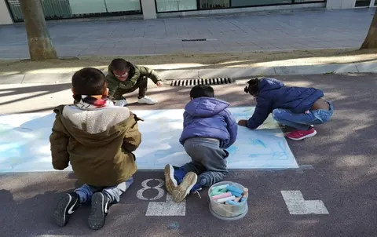
Dissabtes · 6 a 12 anys
CAU
Espai de lleure educatiu on infants i famílies participen d'activitats a través de la convivència, l'estima i l'acompanyament.
Descobreix el CAU
Acompanyem infants, joves i famílies perquè ningú es quedi enrere. “Jo sóc perquè tu ets”: amb el teu suport, la tribu creix.
Entitat sense ànim de lucre nº 49677 · Més de 15 anys al barri · Coneix els projectes
«Jo sóc perquè tu ets»
Per educar un infant, cal tota una tribu. A Ubuntu ho fem possible cada dia amb convivència, estima i acompanyament al cor de Ciutat Meridiana.
Espais on infants, joves i famílies es troben i creixen juntes.
Cada infant és únic: l'escoltem, el cuidem i el valorem.
Al costat de les famílies, del barri i de l'escola, pas a pas.
Educació en el temps lliure, acompanyament familiar, suport psicològic i xarxa comunitària a la Zona Nord de Nou Barris.

Espai de lleure educatiu on infants i famílies participen d'activitats a través de la convivència, l'estima i l'acompanyament.
Descobreix el CAU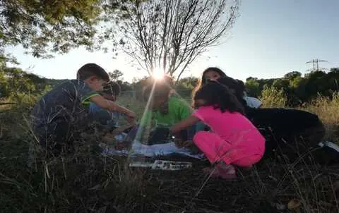
Lleure educatiu i reforç escolar: 50 places perquè infants i adolescents de la Zona Nord tinguin un espai pensat per a ells.
Descobreix el Centre Obert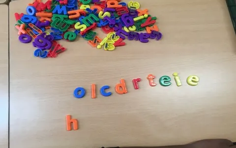
Atenció psicològica, psicopedagògica i logopèdica a l'abast de tothom, amb més de 300 famílies ateses en una dècada.
Descobreix Trampolí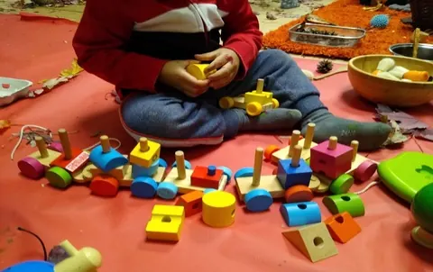
Projecte Teixim Vincles: espais d'acompanyament matern-infantil per potenciar el benestar de les famílies des de l'inici de la criança.
Descobreix Espiral
Acompanyament a joves del barri: referents positius, suport emocional i activitats de lleure que enforteixen l'autoestima.
Descobreix Belombe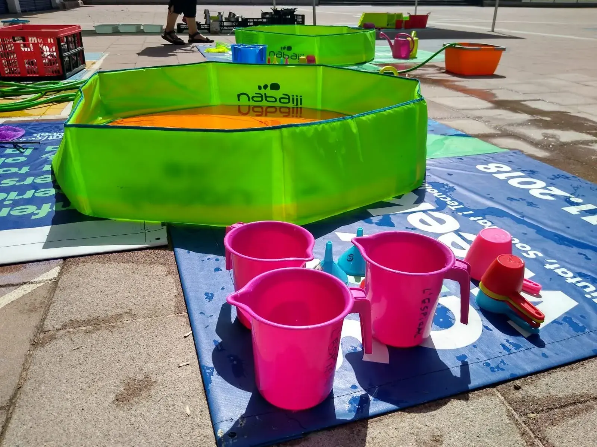
Educació en el temps lliure per a adolescents: pensament crític, creativitat i participació activa a la comunitat.
Descobreix MetanoiaL'any 2008 començàvem com un espai de lleure els dissabtes a la tarda a la Zona Nord de Ciutat Meridiana. Vuit anys més tard, veient les necessitats de les famílies del barri, naixia l'Associació Educació i Lleure Ubuntu: “Jo sóc perquè tu ets”.
Som un equip de professionals i voluntàries amb vocació. És gràcies a la comunitat que Ubuntu creix any rere any i arriba a més infants i famílies.
Coneix la nostra història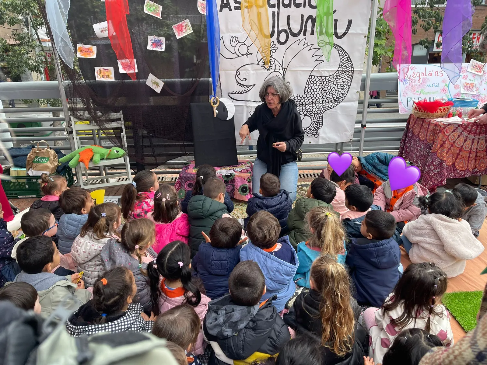
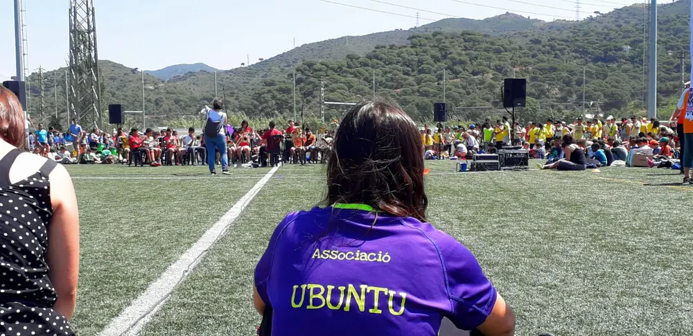
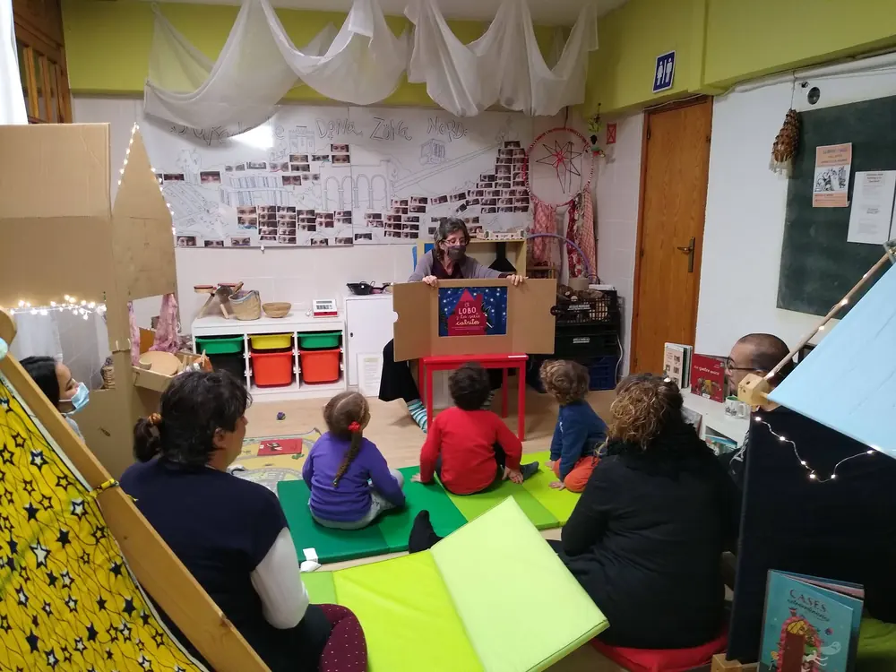
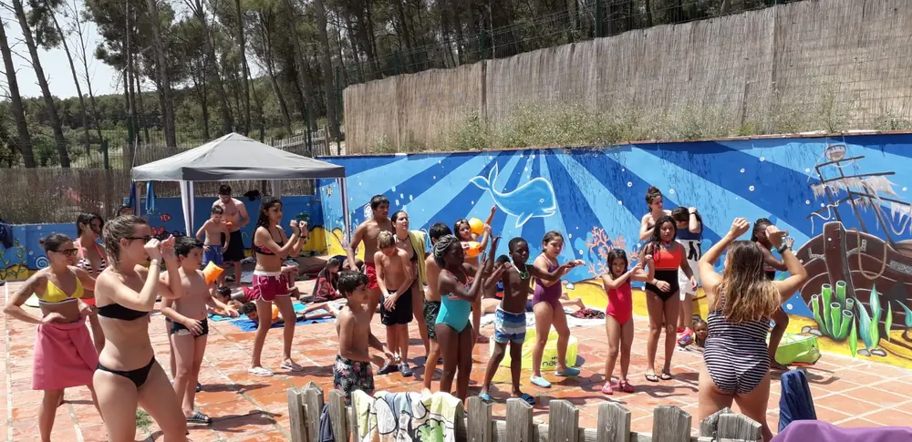
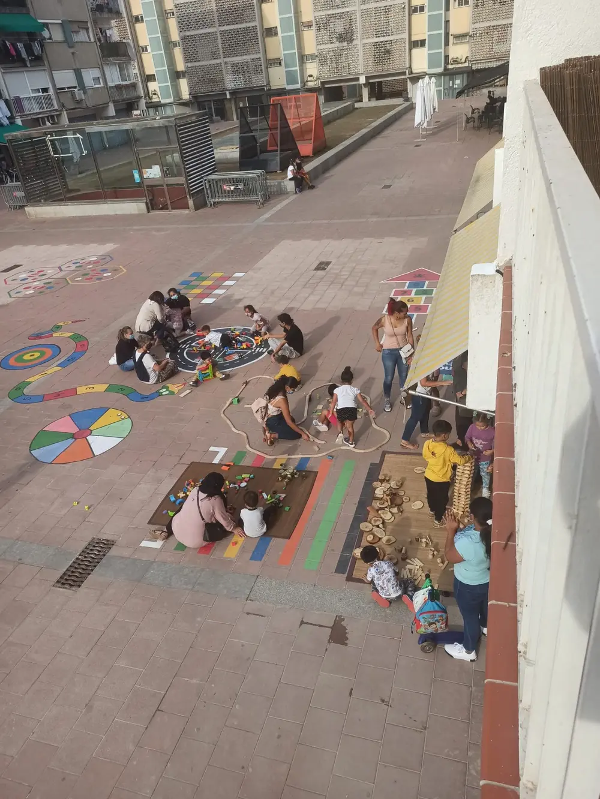
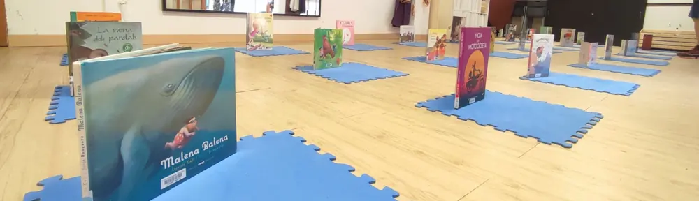
Cada donatiu es converteix en oci educatiu, reforç escolar, atenció psicològica i acompanyament familiar. I cada voluntària que s'uneix fa la tribu més gran.